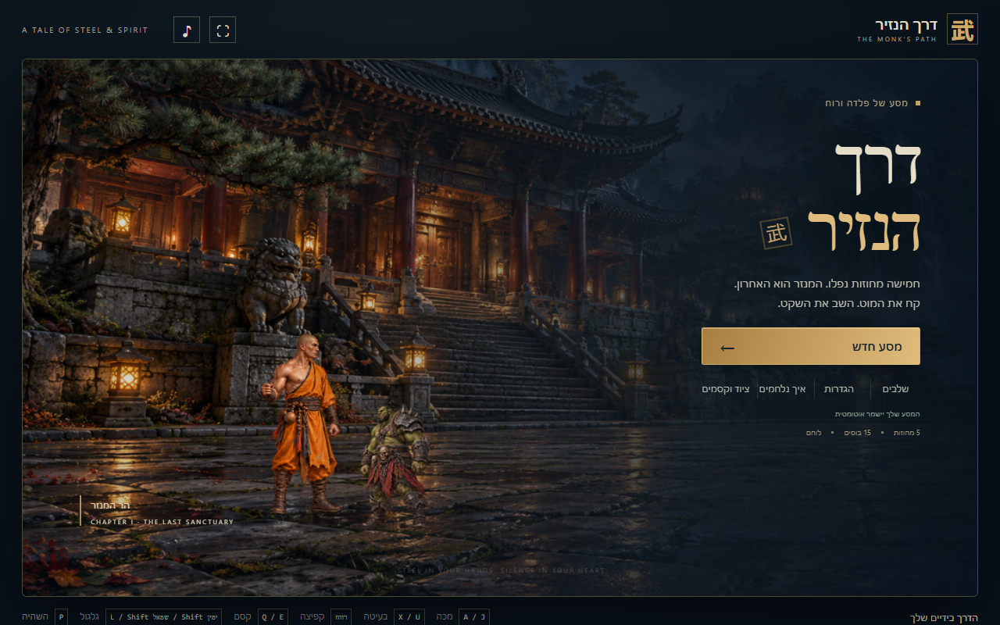
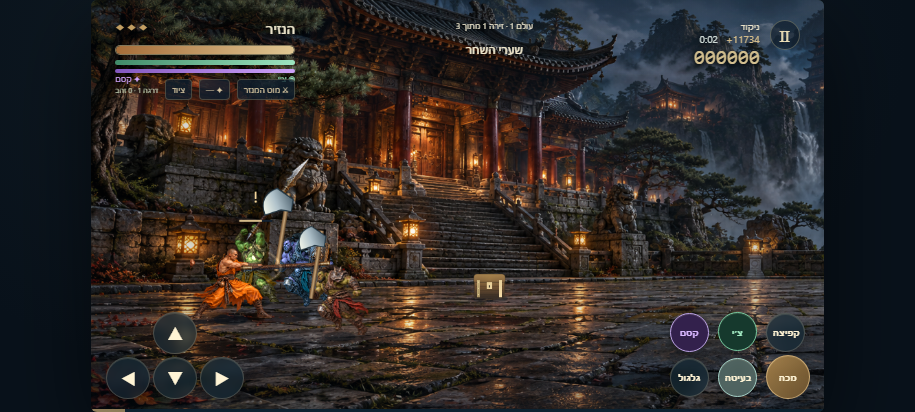
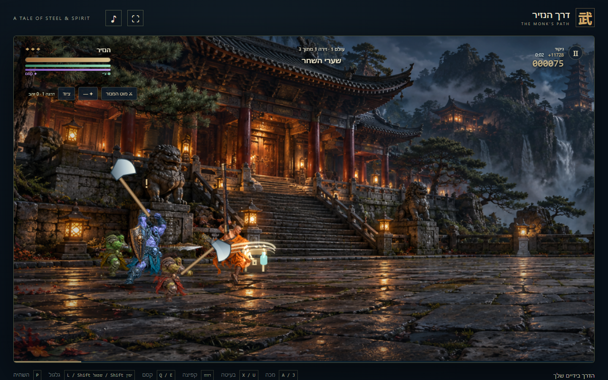
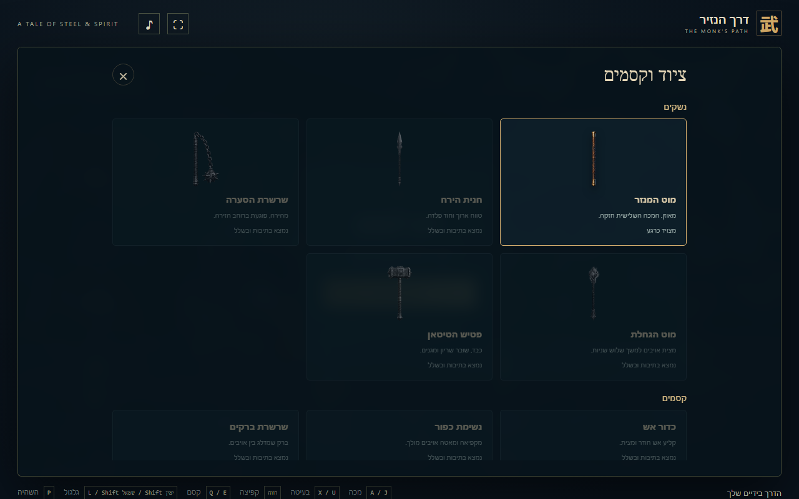

דרך הנזיר
חמישה מחוזות נפלו. המנזר הוא האחרון. קחו את המוט, הילחמו באורקים והמשיכו עד הבוס האחרון.
משחק פעולה בעברית לנייד ולמחשב: חמישה עולמות, 15 זירות ו־15 בוסים. אספו נשקים וקסמים, חברו מכות לקומבואים ונסו לסיים מהר כדי להרוויח בונוס זמן.

איך משחקים
- בחרו מסע חדש ורמת קושי בהגדרות. בנייד נוח לשחק כשהמסך אופקי.
- התקדמו ימינה, חסלו את המארבים והביסו את הבוס כדי לפתוח את הזירה הבאה. סימן קריאה מעל אויב מזהיר לפני תקיפה.
- במגע: השתמשו בחיצים ובכפתורי מכה, בעיטה, קפיצה, גלגול, קסם וצ׳י. אפשר ללחוץ על כמה כפתורים יחד.
- במחשב: חיצים לתנועה, A למכה, X לבעיטה, רווח לקפיצה, Shift לגלגול, Q לקסם, B לצ׳י ו־P להשהיה.
- לחצו פעמיים על כיוון והחזיקו כדי לרוץ. חברו מכה, מכה, בעיטה לקומבו. המדריך בתוך המשחק מפרט רצפים נוספים.
- שברו תיבות ואספו ציוד. כפתור ציוד מאפשר לבחור נשק וקסם. צ׳י וקסם משתמשים במאגרים נפרדים.
השמירה אוטומטית ומקומית. לחצו על ״המשך המסע״ כדי לחזור. השמירות בדפדפן ובאפליקציה נפרדות; אין סנכרון בין מכשירים.
התקנה ב־Android
הורידו את ה־APK ופתחו בנייד. אם Android מבקש, אפשרו התקנה מהדפדפן או ממנהל הקבצים. נדרש Android 8.0 ומעלה. האפליקציה חתומה במפתח הפצה ועובדת ללא אינטרנט.
בעדכון עתידי התקינו מעל האפליקציה הקיימת כדי לשמור על ההתקדמות. הסרת האפליקציה מוחקת את השמירה.
מתוך המשחק



שתפו את המסע
העתיקו את כתובת העמוד ושלחו לחברים. אפשר להתחיל לשחק מיד בדפדפן או להוריד את גרסת Android.